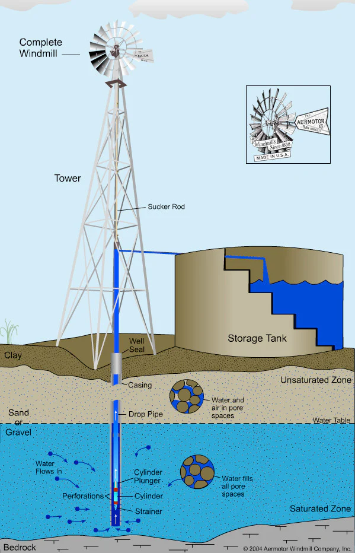
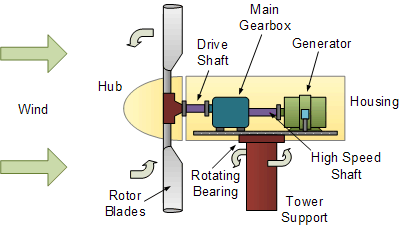

Cleaning Process
The cleaning process of water, also known as water treatment, typically involves several stages to ensure it's safe for consumption and other uses:
Coagulation and Flocculation: Chemicals like alum are added to the water to make small particles stick together, forming larger particles called flocs.
The cleaning process of water, also known as water treatment, typically involves several stages to ensure it's safe for consumption and other uses:
Screening: Water is passed through screens to remove large debris like twigs, leaves, and other large particles.
Sedimentation: The water is then allowed to sit in large tanks, where the heavy flocs settle to the bottom as sediment.
Filtration: The water passes through layers of sand, gravel, and charcoal to remove smaller particles, microorganisms, and some dissolved impurities.
Disinfection: Common methods include chlorination, where chlorine or chlorine compounds are added to kill any remaining bacteria, viruses, and parasites. Other methods like UV radiation or ozone treatment can also be used for disinfection.
pH Adjustment: The pH level of the water is adjusted to ensure it's within safe and desirable limits for consumption.
Fluoridation (Optional): In some places, fluoride is added to the water to help prevent tooth decay.
Storage and Distribution: Once treated, the water is stored in reservoirs and distributed through a network of pipes to homes, businesses, and other consumers.
These processes may vary depending on the source of water (e.g., surface water, groundwater), the level of contamination, and local regulations and requirements.

